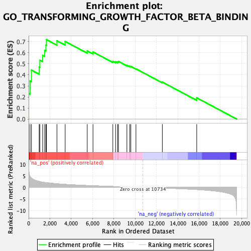
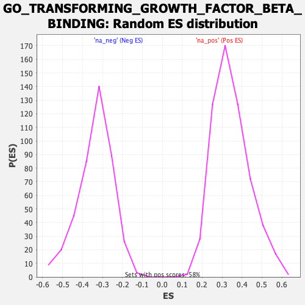

| | | Dataset | PFS |
| Phenotype | NoPhenotypeAvailable |
| Upregulated in class | na_pos |
| GeneSet | GO_TRANSFORMING_GROWTH_FACTOR_BETA_BINDING |
| Enrichment Score (ES) | 0.7183781 |
| Normalized Enrichment Score (NES) | 2.0840483 |
| Nominal p-value | 0.0 |
| FDR q-value | 0.039168354 |
| FWER p-Value | 0.036 |
Table: GSEA Results Summary

Fig 1: Enrichment plot: GO_TRANSFORMING_GROWTH_FACTOR_BETA_BINDING
Profile of the Running ES Score & Positions of GeneSet Members on the Rank Ordered List

Fig 2: GO_TRANSFORMING_GROWTH_FACTOR_BETA_BINDING: Random ES distribution
Gene set null distribution of ES for GO_TRANSFORMING_GROWTH_FACTOR_BETA_BINDING